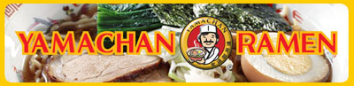
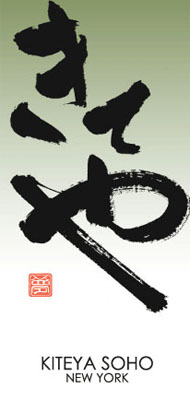
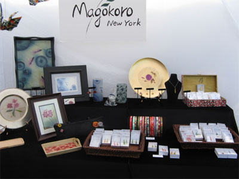
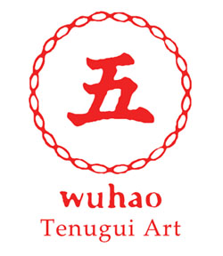

Vendors
Food
What could be better than Japanese food?! Savory, saucy, or sweet... Give your palette a cultural experience of a lifetime. At CJS Matsuri 2011, we have even more vendors than before! Try dishes from great Japanese restaurants all over the city without having to buy a Metrocard.
-
Go Go Curry
Go! Go! Curry! New York is a popular curry restaurant from Japan that launched its Manhattan store in May 2007. Their most popular dish is Katsu Curry, in which the extra thick curry sauce is poured over Koshihikari rice, steamed to perfection, and is topped with a crunchy pork cutlet. For the best bang for your buck, try the Grand Slam Curry. It's a full portion meal with every topping imaginable, from cutlets and sausages to cheese and pickles!
273 W 38th Street
(212) 730 - 5555
-
Hataka Tonton
Hakata Tonton specializes in serving authentic Japanese soul food from Kyushu, one of the four major islands of Japan. Some of Hakata Tonton's concoctions may seem strange, but take a taste of their pork skewers at their booth here at Matsuri and surely you will encounter an unparalleled culinary experience! Hakata Tonton also specializes in wine and sake, and don't miss the restaurant's collagen cuisine - food with skin-friendly benefits.
61 Grove Street
(212) 242 - 3699
-
OMS/B
OMS/B (read omusubi) serves a new kind of dish somewhere between a rice ball (omusubi) and sushi. These delicious little balls are cheaper than sushi and far more filling. They're also very pretty to look at! Try their kalbi beef, california rice ball, fried shrimp, ground beef, eel, and more!
156 East 45th Street
(212) 922 - 9788
-
Otafuku
Otafuku Sauce Co., Ltd brings Okonomiyaki, a Japanese pancake made from a variety of ingredients. The name "Okonomiyaki" comes from the word "Okonomi," which means "what you like" and "Yaki," which is "grill" in Japanese. Thus, while the batter of the pancake is typically made of flour, water, eggs and shredded cabbage, there are other ingredients that are optional such as meat, shrimp, scallions, kimchi, and mochi that you can put in at your desire. Otafuku Sauce Co., Ltd has a company in the U.S. based in California as well as its main headquarters in Japan. The sauce that is topped on the Okonomiyaki at the end is made from Otafuku Sauce Co., so if you like the sauce, you like Otafuku! The sauce, fortunately, can be found anywhere including our local Asian food store, M2M, so drop by and savor some Okonomiyaki to get the full Matsuri experience!

-
Yamachan Ramen
Yamachan Ramen brings fresh ramen noodles in a hot broth that you will surely savor. Yamachan is a family-owned company so you know that you are getting the authentic experience with their noodles. These experts serve a variety of types of noodles which are matched with particular broths - they know their ramen. And no matter the weather, hot or cold, ramen is always enjoyable!
 -
Kiteya
Kiteya is a store with traditional Japanese craftwork in Soho. The word "Kiteya" comes from the meaning, "Please come" in the Kyoto dialect, and Kiteya welcomes customers from all over to visit their store in downtown New York City. There is a variety of decorative accessories with contemporary designs from Kyoto. These include not only stationary and house-ware (lamps and wall decorations), but also t-shirts and sweatshirts with Japanese designs. Come check out the beautiful accessories that Kiteya offers! Matsuri ni kiteya! (Please come to Matsuri!)
 -
Magokoro New York
Magokoro New York offers feminine products ranging from small hand mirrors to wooden combs. Created by Yoshimi Arai following the tragedy of September 11th, these goods recall a sense of love, peace, and harmony that Arai infuses into each piece. Take a look at what Magokoro has brought to Matsuri and you will undoubtedly gain a new appreciation for Arai-san's goods.
(914) 462-2453
 -
Te plus te
Te Plus Te offers a delicate assortment of handmade goods for the home as well as for fashion purposes. Aromas, ceramics, and jewelry populate the boutiques that hold Te Plus Te's specialties. Allow the originality of Te Plus Te to bring you to a state of peace and calm as you peruse their collections.

-
Umi no Ie
Umi no Ie brings authentic Japanese food from East Village! They will be serving Yakisoba, a Japanese version of Chow Mein made of wheat flower and topped with vegetables and other optional ingredients with a touch of Yakisoba sauce and sometimes even mayonnaise. Yakisoba is often served at festivals in Japan so by getting to taste Yakisoba at our very own Matsuri (Japanese festival), you are already immersing yourself in an aspect of Japanese culture. Come and enjoy the delicious Yakisoba that Umi no Ie has generously prepared for us!
86 E 3rd Street
(646) 654 - 1122
-
Wuhao New York
Wuhao New York specializes in Tenugui which are handmade Japanese cotton towels used for wiping the hands as well as other more traditional purposes. Be sure to visit Wuhao's booth here at Matsuri to see the beautiful Tenugui up close and choose one to take home!
536 W 111th Street, #35
(212) 231 - 8126
